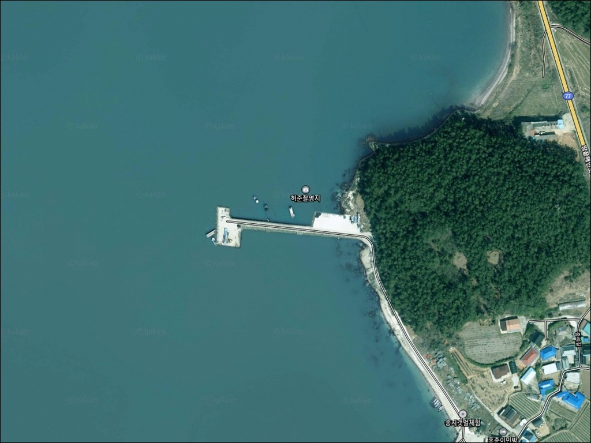
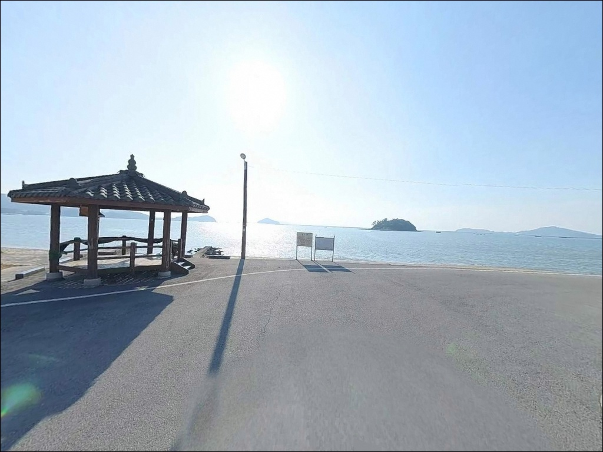
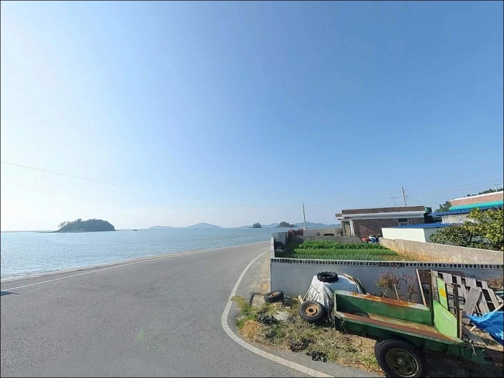
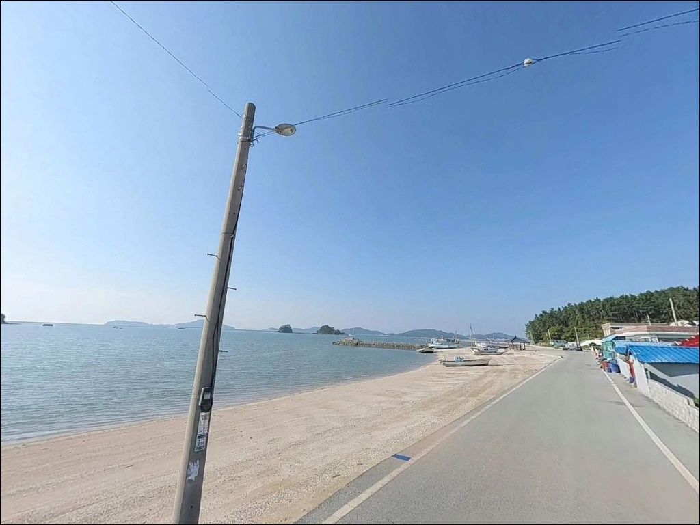
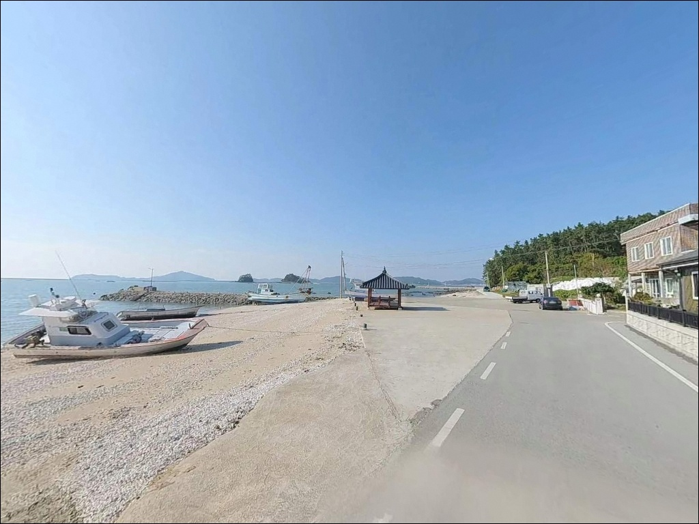
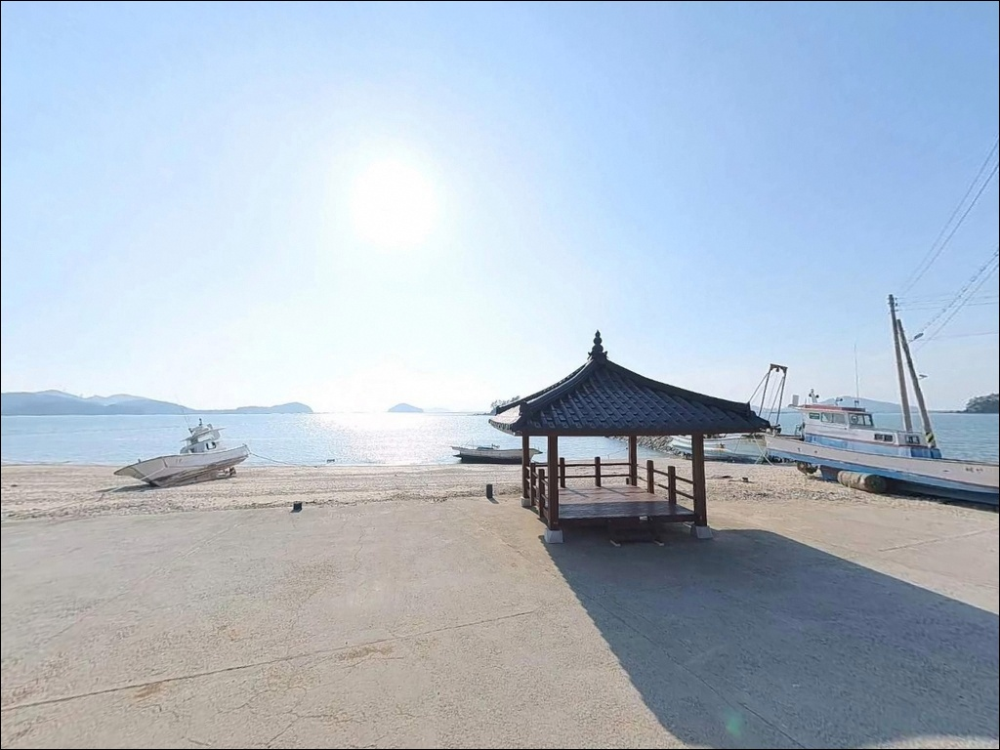
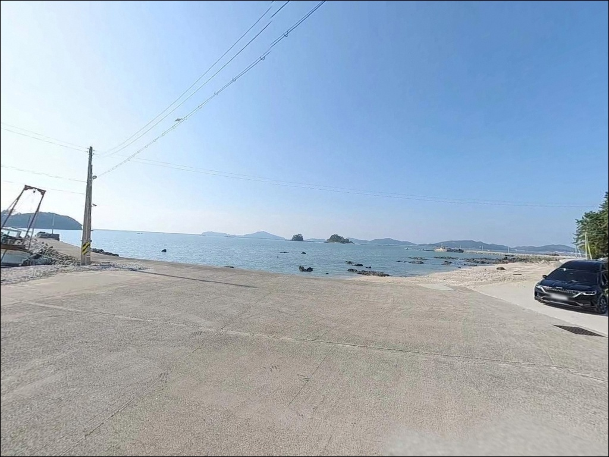
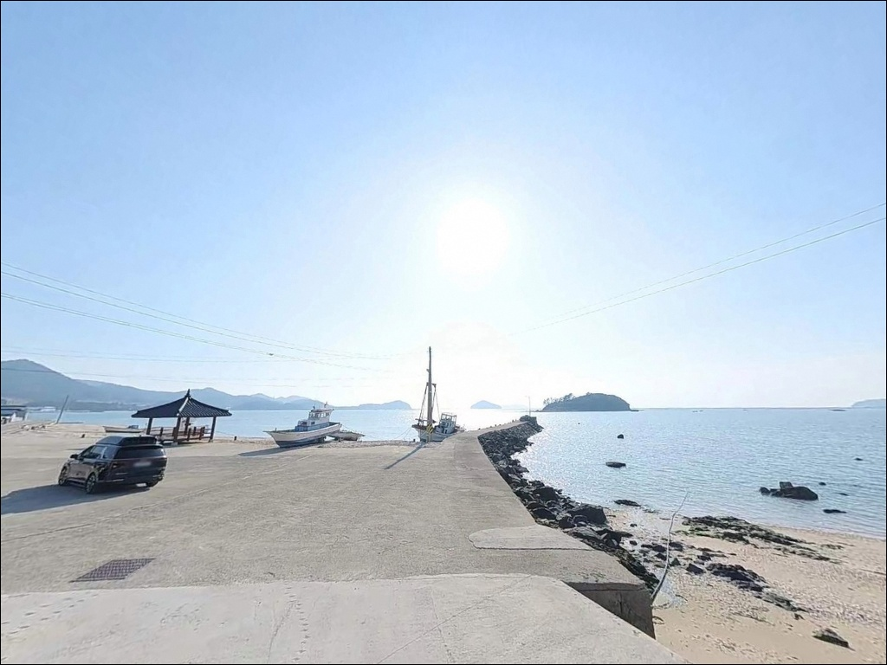
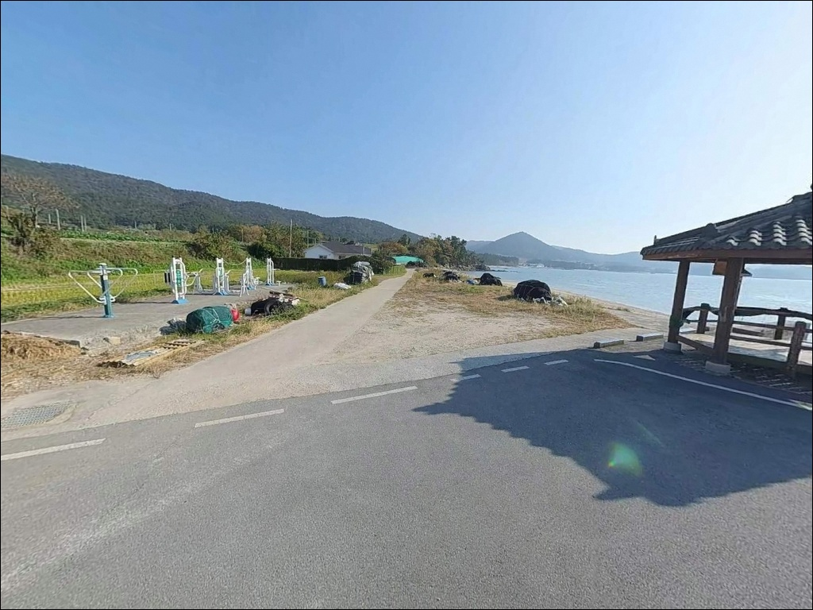

송호리 선착장, 중리제2방파제, 전남 해남군 해변과 가까이 머무는 차박, 낚시 포인트 명소
이 페이지에는 광고(제휴 링크 포함)가 있으며, 광고 링크를 통해 구매하면 운영자가 판매 수익 또는 수수료를 받을 수 있습니다. 포인트 사진: 카카오맵 스카이뷰·로드뷰. 이 페이지의 지도·사진 이미지는 카카오맵의 실제 서비스 이미지와 다를 수 있습니다.


포인트 안내
중리제2방파제 (송호리 선착장)
전남 해남군 송지면 송호리 180-12
수심 1m 안팎의 얕은 펄 저질 선착장에
물때 확인 없이 찾아가면,
간조 타이밍에는 바닥이 드러나
어떤 채비를 써도 낚시가 불가능한 상황이 됩니다.
파도 한 점 없이 잔잔해 보이는 내만이라
방심하기 쉽지만,
이 포인트는 물때가 모든 것을 결정합니다.
중리제2방파제(송호리 선착장)는
전남 해남군 송지면 송호리,
땅끝마을 북쪽 해안에 자리한
지방어항 기반의 소규모 선착장입니다.
앞바다에 크고 작은 도서가 분포해
파도를 막아주는 내만 구조이며,
바다가 호수처럼 잔잔하다는 데서
마을 이름 '송호'가 유래했을 정도입니다.
이 글은 중리제2방파제(송호리 선착장)의
진입 여건, 차박 환경, 낚시 지형 분석,
방식별 공략 조건에 집중합니다.
조황 단정과 특정 어종 보장은
이 글의 범위에 포함되지 않습니다.

1. 진입 동선과 포인트 접근 여건
송호리 선착장은 해남 송지면 해안도로를 따라
마을 안쪽으로 진입하는 구조입니다.
포장도로로 연결되어 있어
접근 자체가 어렵지는 않지만,
마을 도로 특성상 진입로 폭이 넓지 않아
대형 차량이나 장비를 많이 실은 캠핑카라면
사전에 위성지도로 동선을 확인하고 가는 편이 좋습니다.
선착장 끝단 인근에서 회차가 가능한 공간이
있는 것으로 파악되지만,
어선 계류 작업이 이루어지는 공간인 만큼
작업 시간대와 겹칠 경우
진출 여유가 줄어들 수 있습니다.
여러 대가 동시에 진입하면 회차 난이도가 올라가므로
주말 이른 시간대는 여유 있게 계획하는 편이 안전합니다.
주차는 선착장 앞 소규모 공터 또는
도보 이동이 가능한 거리의
송호해수욕장 공영주차장을 활용하는 것이
현실적인 선택입니다.
해수욕장 주차장은 약 800대 규모로,
비수기에는 여유 공간이 넉넉한 편입니다.

2. 차박 환경과 야간 체류 여건
선착장 바로 앞 공터는 공간이 넉넉하지 않아
차박을 메인 목적으로 삼기에는
여건이 제한적입니다.
낚시를 마치고 하룻밤 조용히 머무는 용도라면
송호해수욕장 주차장이 현실적인 대안입니다.
800대 규모의 넓은 부지로,
비수기에는 여유 공간이 충분한 편입니다.
송호리 마을은 민박 시설이 분포해 있고
마을 가로등도 일부 있어
완전한 어둠 환경은 아닙니다.
선착장 자체의 야간 조명은
광량이 제한적일 수 있으므로
개인 헤드랜턴은 반드시 챙겨야 합니다.
앞바다에 도서가 분포한 내만 구조 덕분에
바람 영향이 외해 방파제보다 덜한 편입니다.
차량 소음이나 주민 활동의 영향은
어촌 마을 특성상 새벽 조업 시간대에
간혹 발생할 수 있습니다.
차박이 목적이라면 땅끝오토캠핑장도
인근 유료 캠핑 옵션으로 활용할 수 있습니다.


3. 주변 편의시설 및 인프라 현황
송호리 마을 안에 편의점과 식당이 있으며,
세븐일레븐 인근 도로를 통해
선착장으로 진입하는 구조입니다.
방문 직전에 기본 식음료와 낚시 소품을
챙겨 두는 것이 효율적입니다.
개별 업체 영업 여부는 방문 전 재확인을 권장합니다.
반경 3km 안에 땅끝마을이 있어
식당, 편의점, 관광안내소 등
기본 생활 인프라를 이용할 수 있습니다.
연료나 물, 낚시 소품이 부족하다면
땅끝항(갈두항) 방향으로 이동하면
보충이 가능합니다.
응급 상황 발생 시 해남읍내까지 거리가
상당한 편이므로,
비상약품과 식수는 출발 전에 완비해 두는 것이
기본입니다.
인근 보건지소 위치도 사전에
파악해 두는 편이 좋습니다.

4. 물때 맞추지 않으면 낚시 자리가 사라지는 이유
중리제2방파제(송호리 선착장)에서
방문 전 가장 먼저 확인해야 할 것은
물때입니다.
수심이 1~1.3m 수준의 얕은 펄 저질 구조이고,
간조 시 바닥 일부가 드러날 만큼
조수간만 차이의 영향을 직접 받습니다.
만조 전후 2~3시간이 사실상 낚시 가능 구간의 전부이므로,
바다타임에서 송호리 기준 물때를 확인하고
출발 시각을 역산하는 것이 기본입니다.
간조 전후 시간대에 도착하면
채비를 아무리 잘 세팅해도
수심이 확보되지 않아 낚시가 어렵습니다.
앞바다에 전복·김 양식장이 발달해 있어
양식장 구역 경계를 침범하지 않도록
진입 전 현장 구조를 파악하는 것도 중요합니다.
선착장은 어선이 실제로 작업하는 공간입니다.
어선 이동 동선과 계류 공간을 막지 않는 자리를
먼저 확인하고 낚시 자리를 잡아야 합니다.
야간에는 구명조끼와 헤드랜턴을
반드시 갖추고, 기상 변화에 대비한
풍속·풍향 예보도 출발 전 확인해 두시기 바랍니다.

5. 지형 기반 낚시 여건 분석
송호항 일대는 앞바다에 대나무섬(대섬)을 비롯한
바위섬·무인도가 여럿 분포해
조류를 완화시키는 내만 특성의
잔잔한 수면을 유지하는 선착장 구조입니다.
이 지형 덕분에 파도가 거의 없어
조류 저항 없이 채비를 운용하기는 좋지만,
조류 흐름이 약해 바닥 어종의 이동이 느린 편입니다.
수심은 1~1.3m 안팎의 얕은 펄 저질 구조이며,
선착장 끝단이나 물골이 형성되는 지점에서
수심 변화가 다소 생길 수 있습니다.
간조 시 대섬까지 걸어갈 수 있을 정도의
조수간만 차이가 있는 해역으로,
만조 전후를 노리는 판단이 이 포인트의 핵심입니다.
선착장 안벽 좌우 구간과 끝단 외측이
수심이 상대적으로 확보되는 자리입니다.
인근 해안선 전반적으로 도다리·붕장어·
숭어·감성돔·노래미 계열이 기대되는 해역이며,
계절에 따라 학공치도 붙는 경향이 있습니다.
최신 조황은 가기 전에 꼭 검색해 보시기 바랍니다.


6. 포인트에 어울리는 낚시 스타일
이 포인트에서 지형 조건과 가장 잘 맞는 방식은
원투낚시입니다.
펄 저질 바닥과 완만한 수심 변화 구조는
변형 2단 채비 또는 묶음추 채비로
바닥 어종을 기다리기에 알맞은 환경입니다.
선착장 끝단 외측 방향으로 멀리 던질수록
수심과 조류 흐름이 살아나는 구간에
닿을 가능성이 있습니다.
찌낚시도 내만의 잔잔한 수면 조건과
잘 맞는 스타일입니다.
조류가 완만하게 흐르는 구간에서
감성돔이나 숭어 계열을 노리기에
적합한 환경이며,
만조 전후 수면이 안정될 때 운용하는 방식이
이 포인트에 어울립니다.
루어낚시는 선착장 구조물 인근과
안벽 경계 구간을 탐색하는 방식으로
제한적으로 가능합니다.
볼락·우럭·노래미 계열 소형 어종이
구조물 주변에 붙는 경향이 있으며,
야간에 소형 지그헤드 채비로
선착장 안벽 그림자 구간을 천천히 훑는
방식이 어울립니다.

7. 대안 포인트와 플랜 B 동선
송호리 선착장이 여의치 않을 때
가장 먼저 이동할 곳은
어란진방파제입니다.
같은 해남 송지면 해안선에 자리하며,
수심 2.5~5m로 이 포인트보다 깊고
조류 흐름도 뚜렷한 편입니다.
원투낚시로 도다리·붕장어, 찌낚시로
감성돔·숭어·학공치·농어를 기대해볼 수 있는
알려진 낚시 포인트입니다.
거리를 조금 더 이동하면
땅끝항(갈두항)을 활용할 수 있습니다.
2005년 연안항으로 지정된 곳으로
방파제·물양장 등 시설이 갖춰져 있고,
워킹 루어낚시가 가능한 환경입니다.
진입과 주차 여건도 송호리보다 안정적이어서
초행 낚시꾼의 대안으로 삼기에 좋습니다.
차박을 포함한 하룻밤 체류를 계획한다면
땅끝오토캠핑장이 선택지입니다.
카라반 18대 및 야영장이 운영되는 유료 시설로,
사전 예약이 필요합니다.
낚시와 캠핑을 함께 즐기는 일정이라면
캠핑장을 베이스로 삼고 주변 포인트를 탐색하는
동선이 효율적입니다.

조용한 내만에서 물때를 읽는 것이
이 포인트의 전부입니다
원투낚시나 찌낚시를 즐기는 낚시인이라면
중리제2방파제(송호리 선착장)의
잔잔한 내만 구조는 편안한 환경입니다.
복잡한 항구 없이 조용하고,
파도 걱정 없이 채비에 집중할 수 있는
해남 땅끝 해안선의 한적한 포인트입니다.
다만 수심이 얕고 펄 저질이라는 특성상,
물때를 모르고 찾아가면
낚시 자리 자체가 사라지는 상황이 됩니다.
바다타임 물때 확인, 만조 전후 타이밍 계산,
자급 준비, 위성지도 진입로 점검,
이 네 가지를 갖추고 가면
땅끝 해안선의 여유로운 낚시를
즐길 수 있는 곳입니다.
낚시를 마치고 송호해수욕장 주차장에서
하룻밤 차박으로 마무리하는 일정이라면,
해송림과 내만 바다가 함께 있는
이 해안선만의 조용한 분위기를
느낄 수 있습니다.